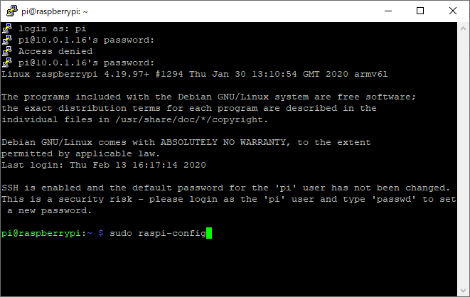
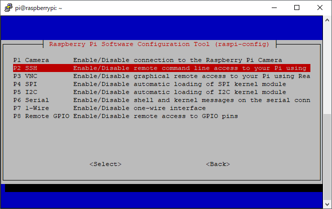

모니터없이 라즈베리파이3 B 설치하기
모니터없이 라즈베리파이3 B 설치하기를 설명하겠습니다.
라즈베리파이3 B에 라즈베리파이 OS를 설치하기 위해선
- 준비물
- 라즈베리파이 3B 또는 라즈베리파이 Zero
- SD카드(8기가 이상)
- 컴퓨터
- 인터넷
준비물이 준비되어 있으면
아래의 링크에서 라즈베리파이 OS를 다운로드 합니다.
https://www.raspberrypi.org/downloads/
Raspbian을 클릭하면 다운로드 페이지로 이동하게 됩니다.
Raspbian Stretch with desktop : strach, sonic Pi 등 일부 소프트웨어가 제외된 파일입니다.
python, VLC media player 등의 소프트웨어는 설치되어 있습니다.
Raspbian Stretch Lite : Desktop GUI가 없는 파일이기 때문에 text ccommand로만 동작 가능합니다.
zero 모델처럼 저사양에 프로그램만 기능하게 하는 용도로 주로 사용한다고 합니다.
원하는 버전을 토렌트 또는 압축파일로 선택해서 다운로드 하실수 있습니다.
저의 경우 Raspbian Stretch with desktop를 다운로드 합니다.
SD카드에 OS를 설치하기 위해 balenaEtcher이라는 프로그램을 설치했습니다.

OS에 맞는걸 다운로드 하시면 되겠습니다.

설치프로그램을 실행후 설치를 진행하시면 됩니다.
설치가 완료되었으면 프로그램을 기동하시고 SD카드를 컴퓨터에 삽입 합니다.
다운로드한 라즈베리파이 OS IMG파일을 선택하시면 번개마크가 활성화가 되며 Flash!버튼을 클릭하시면
데이터가 SD카드에 넣기 시작합니다.
조금 시간이 걸리니 느긋하게 기다리시면 됩니다.
설치가 완료 되었습니다.
SD카드를 추출하고 다시 삽입을 해주시기 바랍니다.
원격으로 SSH로 라즈베리파이를 접속하기 위해선 2가지 방법이 있습니다.
- 유선랜으로 접속방법 네트워크의 내부 IP를 미리 파악해 두셔야만 합니다.
- 무선랜을 설정후 접속방법
아래의 설정은 무선랜으로 라즈베리파이에 접속법을 설명 합니다.
SSH접속 설정을 위해선 우선 SD카드안에 텍스트 문서를 추가 합니다.
추가된 텍스트 문서를 여시고
1 | ctrl_interface=DIR=/var/run/wpa_supplicant GROUP=netdev |
텍스트 문서 파일의 이름을 wpa_supplicant.conf로 변경합니다.
여기까지가 무선랜을 이용한 설정법 입니다.
이후의 설정은 유선, 무선 모두 해당하는 내용 입니다.
이젠 SSH파일이 있어야 유선랜 또는 무선랜에서 wpa_supplicant.conf에 설정한 값대로 SSH 기능을 활성화시킵니다.
추가로 텍스트 문서를 추가 합니다.
폴더안의 숨겨진 확장자를 전부 보이게 합니다.
새로 추가한 SSH파일의 확장자를 삭제 합니다.
이제 기본준비는 모두 끝났으니 SD카드를 추출하시고
라즈베리파이에 삽입하시고 전원을 넣어주세요.
라즈베리파이에 할당된 아이피의 확인은 사용중이신 공유기에서 확인하시면 됩니다.
SSH접속을 위해 접속프로그램이 필요합니다.
이미 설치된 프로그램 또는 설치가 필요하신 경우 저는 putty를 이용하고 있습니다.
https://www.chiark.greenend.org.uk/~sgtatham/putty/
Download it hear.링크를 클릭 합니다.
각 환경에 맞는 프로그램을 다운로드 하시면 됩니다.
Putty를 실행하시면 위와같은 화면이 나오게 되며 아이피를 입력하신후 오픈을 클릭해 주세요.

접속이 되시면 아래의 초기 아이디와 비밀번호를 입력해 주세요.
- ID : pi
- PW : raspberry
정상적으로 접속이 되셨으면 기본적인 세팅을 통해 항상 SSH또는 VNC를 활성화 시켜줍니다.
sudo raspi-config를 입력해 주세요.

설정화면이 나오면 우선 비밀번호를 재설정 합니다.
이대로 엔터를 치시기 바랍니다.
다시한번 엔터
새로운 비밀번호와 확인 비밀번호를 입력합니다.

설정이 완료되었다고 나왔으니 엔터
SSH와 VNC설정을 위해서 5번메뉴로 이동하시고 엔터

항상 SSH가 활성화를 위해 SSH항목에서 엔터
활성화 설정이 완료 되었습니다.
이번에는 VNC항목에서 엔터
활성화 설정이 완료 되었습니다.
최신 업데이트를 위해서 업데이트 항목에서 엔터를 칩니다.
업데이트에 필요한 파일을 다운로드와 설치를 진행하게 됩니다.
이렇게해서 라즈베리파이 OS설치와 기본설정이 완료 되었습니다.